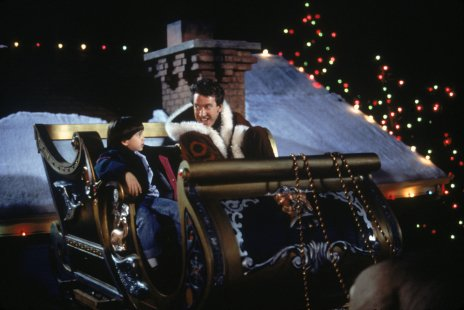
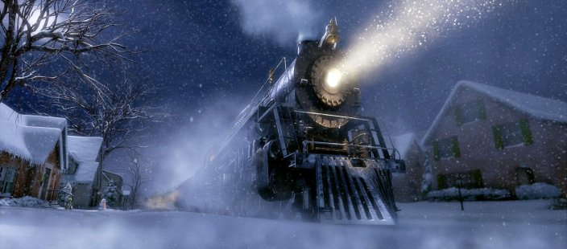

Télapu (1994)
Nagyon úgy néz ki, hogy az igazi Télapó megöregedett, s miután leesett egy háztetőről, teljesen alkalmatlanná vált a télapóskodásra. Scott, aki amúgy alaposan benne volt a balesetben, a hidegben felveszi a Télapó kabátját, s ezzel mit sem sejtve aláír egy szerződést, így mostantól fogva ő a Mikulás. Képzeljünk csak el egy kimért üzletembert, akinek hatalmas pocakja és szép fehér szakálla nő, utálja a szarvasokat, mégis kénytelen szánra szállni és szétosztani az ajándékokat!
A Grincs
A naplopók közül is az igazi ünnepnaplopók a legveszélyesebbek. Létezik egy varázslatos város, ami egy hópehelyben található. Kifalván él a Ki család. Nem túl szépek, az biztos, viszont a maguk módján szimpatikusak. Csak kicsit túl anyagiasak. Imádják az ünnepeket, ez csak természetes. Legfőképpen a karácsony a mindenük. Egyvalakinek azonban sem az ünnepek, sem a karácsony nem tetszik. Ő a Grincs (Jim Carrey), egy titokzatos, fel-felbukkanó városlakó, aki egyszer s mindenkorra véget akar vetni a nagy éves hajcihőknek, amikor mindenki boldog, kivéve őt. Cindy (Taylor Momsen), a család legkisebb tagja őszinte barátsággal közeledik a Grincshez, és meghívja magukhoz ebédre. A botrányba fulladt vendégjárás után viszont a Grincs egy az egyben ellopja a karácsonyt!
Polar Expressz
Főhősünk még csak tízéves, de már majdnem biztos benne, hogy a Mikulás nem létezik, és a karácsony csak a szülők trükkje, amikor az éjszaka közepén hatalmas robajjal egy csillogó fekete vonat áll meg közvetlenül a házuk előtt. A kalauz azt mondja, érte jöttek. Miután hitetlen hősünk habozva felszáll, a Polar Expressz pöfögve megindul apró pizsamás utasaival az Északi-sarkra, hogy ott részesei lehessenek annak az ünnepi pillanatnak, amikor a Mikulás a manók jelenlétében átadja az általa kiválasztott gyermeknek az első karácsonyi ajándékot.